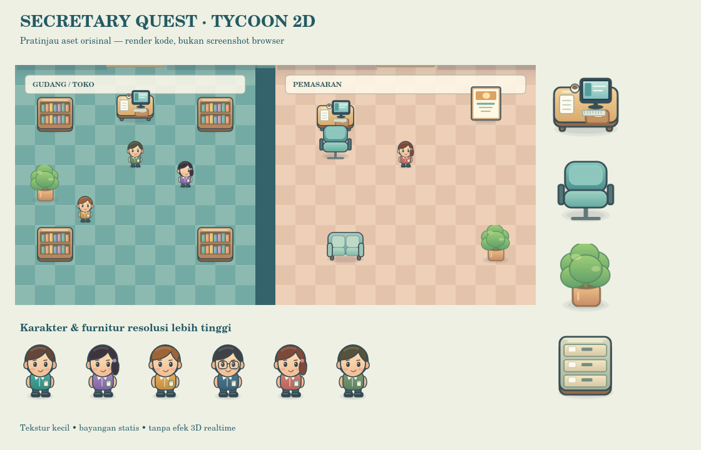

Petualangan akuntansi di Kantor Pelangi · SMP 7–9
Alternatif: buka folder di VS Code dan jalankan index.html melalui Live Server. Jangan buka index.html langsung dengan file://.
WASD/panah untuk berjalan · E interaksi · M peta · J buku misi.
16 tes Node/DOM lulus dan seluruh angka ekonomi cocok dengan fixture. Uji browser grafis dan URL publik belum diverifikasi. Paket belum dipublikasikan.
# Secretary Quest — Office Adventure · Tycoon HD 2D Game single-player Bahasa Indonesia untuk SMP kelas 7–9. HTML/CSS/JavaScript ES Modules + Phaser **3.90.0**, tanpa database, akun, backend, CDN saat bermain, atau build wajib. **Status pengiriman:** implementasi 20 quest lengkap; **16 tes Node/DOM lulus**. Pengujian Chromium grafis, FPS, hasil cetak nyata, dan hosting HTTPS **belum dijalankan** karena kontrol browser yang didukung lingkungan pengerjaan tidak tersedia. GitHub belum terhubung. Paket ini belum diklaim terbit atau lulus semua acceptance test browser. Detail: `docs/HASIL_TES.md`. ## Pembaruan visual 1.1.0 Grafik kini kartun top-down ala tycoon: karakter chibi bergaris halus, furnitur membulat, lantai kotak pastel, dan bayangan lembut. Perubahan ini mengikuti permintaan terbaru pengguna, menggantikan target pixel art pada blueprint awal; aturan 20 quest dan akuntansi tetap sama. - Texture karakter 64×96, furnitur 128×128; ditampilkan kecil dan digunakan ulang. Art dibuat saat boot, bukan diulang setiap frame. - Lantai, garis ubin, papan nama, dan bayangan dinding digabung menjadi satu tekstur statis. - Zoom awal 150%; tombol Zoom di bawah mengganti 100%, 125%, atau 150%. - Tidak memakai model 3D, video, font online, atau blur real-time. Total area tekstur yang dihasilkan sekitar 7,30 MiB data RGBA mentah (bukan total RAM/GPU game dan bukan pengukuran FPS). - Semua 16 tes Node/DOM tetap lulus. Render aset diperiksa melalui Canvas Node; pengujian browser grafis/FPS masih belum tersedia. - Save dari versi 1.0 tetap memakai key dan schema yang sama. Gunakan browser serta alamat/port yang sama, atau ekspor/impor save. ## Mulai bermain di Windows 1. Ekstrak ZIP. Buka folder `secretary-quest`. 2. Jika Node.js sudah terpasang, klik dua kali **MULAI_WINDOWS.bat**. 3. Browser membuka `http://127.0.0.1:8080`. Jika belum terbuka, tunggu server lalu refresh. 4. Biarkan jendela server terbuka selama bermain. Tutup jendela itu untuk menghentikan server. 5. Klik **Main Baru**, isi nama panggilan opsional, pilih satu dari tiga warna, lalu mulai. Alternatif VS Code: buka folder ini, gunakan ekstensi Live Server, lalu buka `index.html` dengan Live Server. **Jangan double-click index.html menggunakan file://**, karena ES Modules memerlukan HTTP. Cara terminal (Node.js 20+): ```sh cd secretary-quest npm start ``` `npm install` tidak diperlukan untuk bermain. Jika Node.js tidak tersedia tetapi Python tersedia: `python -m http.server 8080`, kemudian buka alamat di atas. Internet diperlukan untuk mengunduh paket pertama kali / mengunjungi hosting; game tidak memanggil layanan eksternal saat bermain. ## Cara bermain - **WASD / panah**: jalan; **E / Spasi**: interaksi dari jarak maksimal 64 px. - Klik objek hanya bekerja saat karakter sudah dekat. Tidak ada teleport dalam menu pemain. - **M**: peta; **J**: buku misi; **Esc**: tutup panel; **Enter**: lanjut dialog. - Panah emas dan teks arah menandai tempat tugas. Peta menampilkan enam ruang yang terhubung lewat lobi. - Bos memberi seluruh tugas; pesan berikutnya dapat diterima melalui telepon internal pada objek tugas. - Tutorial: berjalan ke Bos → menerima modal → komputer sekretaris → latihan → gudang. - Jawab dengan integer rupiah: `160000`, `160.000`, atau `Rp 160.000`. Rugi ditulis `-400`. Stok menggunakan **buah**, bukan rupiah. - Tidak ada timer. Dua jawaban salah membuka petunjuk; empat kesalahan menampilkan contoh langkah. - Rapat/laporan tiap hari wajib selesai untuk membuka hari berikutnya. ## Fitur yang diimplementasikan - Dunia 42×30 tile / 1344×960 px; kamera mengikuti pemain, collider dinding dan furnitur, sprite empat arah / tiga frame berjalan dan tiga palet avatar. - Ruang Bos, sekretaris, arsip, gudang/toko, pemasaran, rapat; lobi penghubung; NPC Pak Budi, Sari, Doni, serta pelanggan. - 20 quest / 5 hari dari lampiran, disalin ke data runtime; 50 EXP dan 1 token per misi. - Kalkulator modal, nota pembelian, kasir, pilah uang masuk/keluar, arsip drag-and-drop + alternatif tombol, kategori bukti, hitung stok dengan token buku, diskon, laporan bertahap, dan transaksi dua tahap. - Ledger idempoten dengan 15 ID unik. Uang integer, perbedaan kas/persediaan/omzet/HPP/biaya/laba, invariant aset = modal + laba. - Autosave satu snapshot per perubahan / interval posisi aman; validasi load dengan replay ledger; impor/ekspor JSON; reset dua konfirmasi. - Dekorasi tanaman dan karpet memakai token, tidak memengaruhi kas perusahaan. - Suara pencapaian sintetis dan mute, confetti mengikuti preferensi reduced motion. - Ending, sertifikat virtual, ringkasan nilai belajar, CSS print untuk simpan PDF lewat browser. ## GitHub Pages (tanpa npm di hosting) 1. Buat repository GitHub, misalnya `secretary-quest`. Untuk alur paling sederhana gunakan repository Public. 2. Pilih **Add file → Upload files**. Unggah **isi** folder `secretary-quest`, bukan ZIP. `index.html`, `style.css`, folder `src`, `assets`, dan `vendor` harus berada di root repository. Sertakan `.nojekyll` (buat lewat Add file → Create new file bila file tersembunyi tidak terunggah). 3. Commit ke branch `main`. 4. Buka **Settings → Pages → Build and deployment → Source: Deploy from a branch**. 5. Pilih **main**, **/(root)**, lalu **Save**. Tunggu proses Pages selesai. 6. Gunakan URL yang benar-benar ditampilkan GitHub Pages. Buka URL tersebut dalam mode incognito, jalankan misi pertama, refresh, lalu Lanjutkan. Cek tidak ada 404 atau error di Console. 7. Setelah teruji, bagikan URL itu kepada guru/siswa. Laptop Anda tidak perlu tetap hidup. Mereka boleh memakai jaringan berbeda; setiap browser mempunyai progres sendiri. Semua referensi runtime relatif (`./src`, `vendor`, `assets`), sehingga mendukung subfolder repository. Tidak ada domain contoh yang diklaim sebagai URL aktif. Dokumentasi resmi: https://docs.github.com/en/pages/getting-started-with-github-pages/configuring-a-publishing-source-for-your-github-pages-site (dicek 20 Oktober 2026). ## Pengujian ```sh npm install npm test npx playwright install chromium npm run test:browser ``` `npm test`: ekonomi, urutan quest, replay/idempotensi, save rusak, nilai laporan lima hari, aksesibilitas jalur geometris, asset relatif, dan integrasi DOM. DOM memakai jsdom, **bukan browser grafis**. Tanpa dependency jsdom, test DOM ditandai skip; test ekonomi lainnya tetap jalan. `npm run test:browser`: skrip Playwright tersedia untuk 1280×720 dan 1366×768, **belum dijalankan di lingkungan pembuatan**. Skrip full quest mengatur posisi karakter untuk mempercepat pengujian form; tes gerakan/collision menggunakan keyboard. Penjelajahan seluruh rute secara manual tetap bagian checklist. Jangan mengubah status belum terverifikasi menjadi lulus tanpa menjalankan tes. ## Struktur dan pengembangan - `src/data.js`: produk + seluruh quest; sumber `tests/fixture.json`. - `src/engine.js`: transaksi murni, ledger, progres, parse rupiah, replay save, penilaian. - `src/world.js`: geometri map dan target quest; dipakai untuk tes keterjangkauan. - `src/art.js`: generator texture kartun tycoon orisinal; tidak membutuhkan gambar eksternal. - `src/office.js`: Phaser scene, fisika, kamera, input, interaksi. - `src/main.js`: menu, dialog, minigame, laporan, autosave, sertifikat. - `vendor/`: Phaser terkunci dan lisensinya, disertakan agar runtime tidak bergantung CDN. - `tests/`: fixture asli, unit / integrasi DOM, dan browser test. - `docs/`: blueprint, panduan guru, laporan tes, output tes mentah. Ekonomi sengaja tidak diperluas melalui pembelian bebas: transaksi terikat 20 quest agar semua siswa memiliki hasil acuan yang sama. Ini media latihan, bukan sistem ujian antikecurangan. Kunci jawaban memang dapat dilihat di source statis. ## Simpan, pindah perangkat, dan reset Key: `secretaryQuest.v1.save`. Progres hanya di browser/perangkat yang sama; beda origin/port mempunyai save terpisah. Gunakan Menu → Panduan & pengaturan → Ekspor Save / Impor Save untuk pindah perangkat. Save tidak terverifikasi ditolak dan dapat diunduh untuk pemulihan; tidak otomatis ditimpa. Hapus Progres meminta dua konfirmasi. Nama opsional hanya disimpan lokal. Tidak ada analitik atau pengumpulan data siswa. ## Jika ada masalah - Menu tidak muncul: periksa seluruh folder `vendor` ikut diekstrak, dan buka lewat HTTP. - Progres tidak muncul: gunakan browser dan alamat/port yang sama; impor file save jika pindah. - Simpan gagal: browser mungkin melarang penyimpanan; ekspor save melalui menu sebelum menutup. - Salah jawab: lihat Buku Kas / petunjuk; angka HPP memakai harga **beli** barang terjual. - Tidak dapat berinteraksi: dekatkan karakter sampai muncul petunjuk **E**, lalu tekan sekali. - Panel panjang: gulir di panel. Tombol tidak perlu dicapai dengan mengubah zoom browser. Sumber aset dan izin ada di `LICENSE_ASSETS.md`.
# Panduan guru — Secretary Quest Sasaran: SMP 7–9. Satu pemain per browser. Estimasi satu sesi penuh 60–90 menit, atau lima sesi 15–20 menit. Estimasi pedagogis ini belum diukur melalui uji kelas. ## Tujuan belajar Siswa membedakan modal, kas, persediaan, omzet, harga pokok penjualan, dan biaya; memeriksa bukti; mengurangi stok ketika barang terjual; menyusun laporan; serta memahami bahwa perusahaan dapat mengalami rugi harian meskipun kas bertambah. ## Persiapan 1. Jalankan game dari server lokal atau GitHub Pages yang sudah Anda uji. Untuk ruang komputer, lebih praktis satu URL hosting; setiap siswa punya save sendiri. 2. Siapkan kalkulator/kertas coretan bila diperlukan. Tidak perlu memperkenalkan debit-kredit sebelum bermain. 3. Jelaskan bahwa seluruh uang dan transaksi virtual. Nama panggilan boleh kosong. 4. Lakukan tutorial bersama: lobi → Bos → modal → komputer → latihan → gudang. 5. Minta siswa menyimpan bukti belajar melalui sertifikat PDF dan ekspor save, tanpa mengirim data pribadi yang tidak diperlukan. ## Tahapan pembelajaran | Hari | Quest | Fokus | Refleksi | |---|---|---|---| | 1 | 1–4 | Modal, pembelian stok, verifikasi nota, laporan | Mengapa pembelian buku tidak langsung mengurangi laba? | | 2 | 5–8 | Omzet, HPP, promosi, rapat pertama | Apakah Rp156.000 omzet sama dengan laba? | | 3 | 9–12 | Restok pulpen, penjualan, sisa barang | Apa akibat barang terjual terhadap kas dan stok? | | 4 | 13–16 | Diskon 10%, listrik, rugi Rp400 | Mengapa kas bertambah walaupun hari ini rugi? | | 5 | 17–20 | Restok, dua transaksi, laporan akhir | Mengapa Rp575.600 kas akhir bukan laba total? | Ruang pemasaran dan rapat aktif mulai hari kedua. Semua quest diberikan Pak Budi; NPC lain hanya membantu. Pemain tidak perlu kembali ke Bos setelah setiap quest karena pesan bisa dibuka pada objek tugas. ## Angka audit guru | Hari | Omzet | HPP | Biaya | Laba/rugi | Kas akhir | Nilai stok | |---|---:|---:|---:|---:|---:|---:| | 1 | 0 | 0 | 0 | 0 | 340.000 | 160.000 | | 2 | 156.000 | 104.000 | 20.000 | 32.000 | 476.000 | 56.000 | | 3 | 90.000 | 56.000 | 0 | 34.000 | 526.000 | 40.000 | | 4 | 42.600 | 28.000 | 15.000 | −400 | 553.600 | 12.000 | | 5 | 67.000 | 44.000 | 5.000 | 18.000 | 575.600 | 8.000 | | Total arus laba-rugi | 355.600 | 232.000 | 40.000 | 83.600 | — | — | Akhir: kas Rp575.600 + persediaan Rp8.000 = aset Rp583.600 = modal Rp500.000 + laba Rp83.600. Sisa 1 buku dan 0 pulpen. Pembelian total Rp240.000; hanya Rp232.000 menjadi HPP, sisanya Rp8.000 masih persediaan. Catatan koreksi satuan blueprint: sisa pulpen/buku adalah **buah**, bukan rupiah. Implementasi memakai data JSON dengan satuan buah di label UI. ## Kunci jawaban 20 quest Lihat `tests/fixture.json` untuk jawaban rinci dan semua transaksi. File fixture adalah acuan pengujian, bukan output ekonomi yang disuntikkan ke mesin; perhitungan ledger dibuat melalui transaksi aktual. ## Penilaian yang ditampilkan - Akurasi (40): jumlah quest selesai dibagi total percobaan. Kesalahan tahap form juga dihitung. - Ketuntasan (30): quest selesai / 20. - Pemahaman laporan (20): laporan harian yang selesai / 5. Ini indikator berbasis penyelesaian, **bukan** penilaian mendalam terhadap alasan siswa. - Eksplorasi/petunjuk (10): jumlah ruang berbeda yang dikunjungi + catatan bantuan berbeda yang dibaca, maksimal 10. Nilai dibulatkan menjadi 0–100. Gunakan sebagai umpan balik formatif; tambahkan tanya jawab lisan untuk menilai pemahaman sesungguhnya. Tidak ada hukuman uang atau timer. Sertifikat adalah sertifikat kegiatan virtual, bukan sertifikasi kompetensi profesi. ## Pertanyaan tindak lanjut 1. Mengapa cek nota pada Q3 tidak mengurangi kas lagi? (Pembelian sudah tercatat Q2.) 2. Mengapa diskon mengurangi omzet tetapi tidak mengubah HPP per buku? (Harga beli barang tidak berubah.) 3. Mengapa persediaan dicatat dengan harga beli, bukan harga jual? (Nilai modal aset yang belum terjual.) 4. Q19 menerima Rp7.000 tetapi keluar Rp5.000 dan ada HPP Rp4.000. Berapa kontribusi labanya? (−Rp2.000.) 5. Apakah rugi Rp400 hari keempat berarti seluruh usaha rugi? (Tidak; laba kumulatif tetap positif.) ## Checklist sebelum penggunaan kelas Karena pengujian browser belum dapat dilakukan di lingkungan pembuatan, jalankan skrip Playwright atau uji manual sebelum penggunaan kelas. Pastikan karakter berjalan, collider bekerja, tidak ada aset hilang, input berfungsi, semua tombol dapat dijangkau pada resolusi laptop sekolah, dan PDF sertifikat terbaca. Panduan rinci ada di `HASIL_TES.md`.
# Laporan pengujian aktual Tanggal pengerjaan: 20 Oktober 2026. Hasil aktual disimpan di `TEST_OUTPUT.txt`. ## Dijalankan: 16 tes lulus, 0 gagal, 0 dilewati Perintah: `node --test tests/*.test.js` dengan jsdom 26.1.0 tersedia. 1. Menyelesaikan 20 quest dan membandingkan **seluruh 15 baris ledger**, seluruh field laporan akhir, dan kelima laporan harian terhadap fixture asli. 2. Jawaban salah pada seluruh quest tidak mengubah kas, stok, atau ledger. 3. Quest harus diterima dan tidak boleh dilompati. 4. Pemanggilan penyelesaian ganda, replay ID transaksi, dan membuka laporan tidak menggandakan transaksi / EXP. 5. Serialisasi dan restore setelah tiap quest, termasuk Q7, Q13, Q19; lanjut sampai ending. 6. Autosave menulis satu snapshot JSON valid. 7. Q19 dua transaksi atomik: salah satu jawaban salah berarti tidak ada transaksi diterapkan; hasil benar menambah kas Rp2.000 neto. 8. Transaksi yang kasnya tidak cukup / stok kurang / nominal negatif ditolak tanpa memutasi state asal. 9. Save rusak, versi salah, modifikasi saldo/ledger/progres/token ditolak. 10. Parsing rupiah menerima pemisah ribuan/minus; menolak kosong, teks asing, desimal, dan notasi eksponen. 11. Semua data runtime quest identik dengan lampiran JSON. 12. Semua asset/import relatif ditemukan; runtime tidak mengandalkan CDN, path absolut, atau localhost. 13. Integrasi **DOM simulasi jsdom**, bukan browser: Main Baru, tutorial, seluruh 20 form, jawaban salah, pilihan kategori, arsip tombol, slider diskon, hitung stok, laporan bertahap, load Q7/Q13/Q19, ending, sertifikat, dan reset dua langkah. Scene Phaser di-mock; fisika dan rendering tidak berjalan dalam tes ini. 14. Posisi spawn aman; pusat setiap collider ditolak sebagai posisi save. 15. BFS grid 8 px membuktikan semua enam objek tugas dapat dicapai dari lobi melalui geometri bebas collider. 16. Seluruh 20 quest menunjuk objek dunia yang valid. Validasi tambahan: `node --check` untuk modul JavaScript dan skrip E2E, tidak ada kegagalan sintaks. Phaser 3.90.0 dan lisensi MIT-nya sudah dibundel lokal. ## Hasil ekonomi aktual | Parameter | Hasil | |---|---:| | Quest selesai | 20 | | Transaksi unik | 15 | | EXP | 1.000 | | Kas akhir | Rp575.600 | | Omzet | Rp355.600 | | HPP | Rp232.000 | | Biaya | Rp40.000 | | Laba total | Rp83.600 | | Persediaan | 1 buku, 0 pulpen | | Nilai persediaan | Rp8.000 | | Aset | Rp583.600 | ## Belum diverifikasi - Browser Chromium nyata pada 1280×720 / 1366×768, frame rate, gerakan/collision Phaser saat rendering, ukuran UI aktual, suara, dan hasil print PDF. - Drag-and-drop native browser (DOM menguji alternatif tombol; E2E menyediakan drag test). - Tidak adanya error console / request 404 dari browser sungguhan. - Publikasi GitHub Pages, HTTPS, refresh di subfolder repository, mode incognito/perangkat lain. **Penyebab:** skill Sites untuk lingkungan managed mensyaratkan kontrol browser yang didukung; kemampuan tersebut tidak tersedia. Sesuai instruksi skill, server preview / browser alternatif tidak dipasang atau dijalankan. GitHub juga belum terhubung. Ini batas verifikasi, bukan bukti bahwa seluruh acceptance criteria telah lulus. ## Cara menjalankan tes browser yang disertakan ```sh npm install npx playwright install chromium npm run test:browser ``` Konfigurasi akan menjalankan server lokal dan dua resolusi desktop. Terdapat dua skenario per resolusi: - Menu → tutorial → 20 quest → save/refresh → sertifikat; rekam error JavaScript dan respons aset gagal. Untuk efisiensi, posisi karakter diatur langsung mendekati objek; semua jawaban dimasukkan melalui panel pemain. - Gerakan keyboard, collider furnitur, jarak interaksi, pause ketika panel terbuka, mute, dan reset dua konfirmasi. Tes disediakan sebagai source dan **belum dieksekusi**. Laporan HTML/trace akan dibuat oleh Playwright saat dijalankan. Tambahkan uji jalan manual lewat semua pintu, klik objek, arsip via drag, Esc/Enter, scrolling, impor/ekspor save, serta pencetakan sertifikat. ## Setelah publikasi Buka URL HTTPS yang benar-benar diberikan hosting, bukan URL perkiraan. Uji dengan incognito/perangkat lain. Refresh dan Lanjutkan sesudah misi pertama. Pastikan semua asset termuat di URL subfolder repository. Baru bagikan link tersebut sebagai game online. ## Verifikasi revisi visual 1.1.0 Seluruh 16 tes Node/DOM dijalankan ulang setelah perubahan visual dan tetap lulus. Generator art dijalankan melalui Canvas Node dan hasilnya diperiksa secara visual. Dihasilkan 86 entri tekstur (termasuk alias NPC dan lantai), sekitar 7,30 MiB RGBA mentah. Ini ukuran buffer ilustrasi, bukan konsumsi RAM/GPU keseluruhan dan bukan benchmark FPS. Ukuran collider pemain dipetakan ulang agar tetap 20×14 px di dunia, meskipun resolusi sprite meningkat. Collider map, lokasi objek, stok, ledger, EXP, dan format save tidak diubah. Zoom kamera 100–150% tidak memindahkan objek di dunia. Batas verifikasi browser dari bagian sebelumnya tetap berlaku. Pratinjau `PREVIEW_TYCOON.png` merupakan render kode aset, bukan screenshot game yang dijalankan di browser.
Render kode aset; bukan screenshot browser.
